Due to recent hype I have decided to look into machine learning and its uses. I have a decent computer powered by a Nvidia 980ti, which is more than capable of machine learning. This is great for most tasks, but as I get a bunch of Azure credits each month with my MSDN licence, I figured I would make the most of Microsoft’s new GPU servers.
This post is aimed at getting an environment up and running that works with Tensorflow and Keras. I decided to use Python 3 over 2.
At the bottom of the page you can find the complete code used in this post as one file.
Log into the Azure portal and create a new Azure compute server with Ubuntu 16.04.
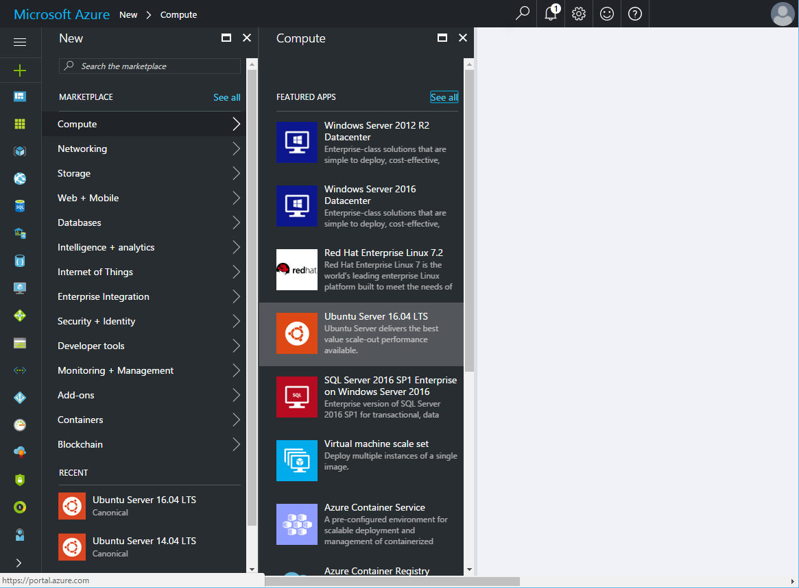
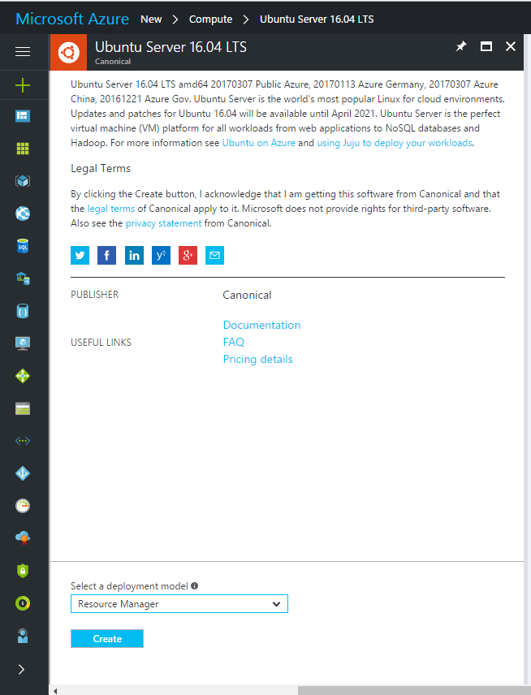
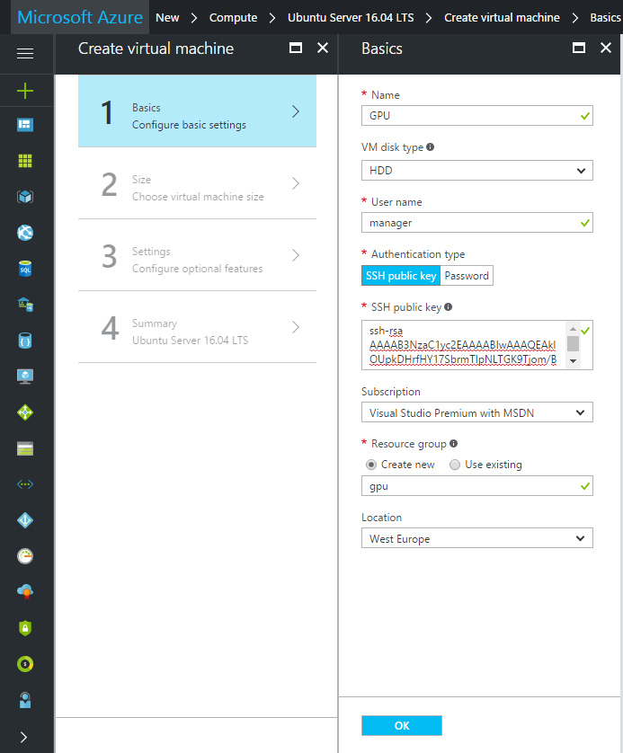
I don’t know if this is true for other regions, but for West Europe I had to select HHD rather than SSD to get the NV servers to show up (which do have SSD drives). If you cannot see the NV servers in your list try changing your VM Disk type.
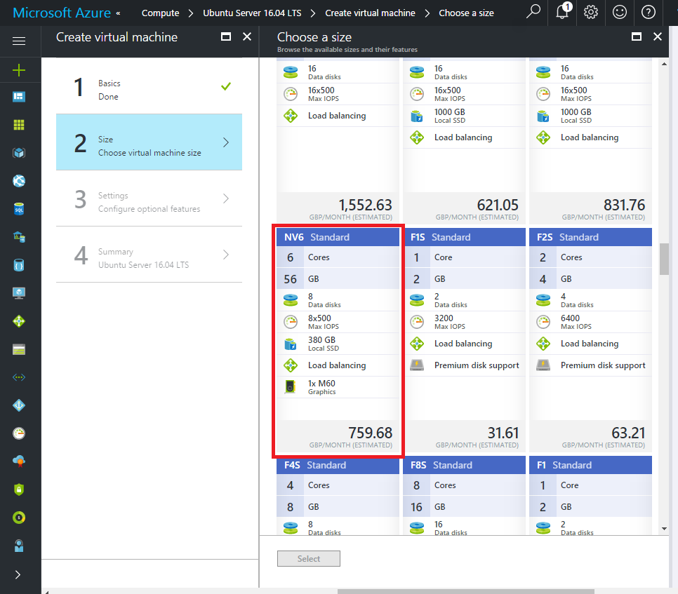
For initial configuration, you should select the NV6 as it is cheaper to run per hour. You can always change it later. Depending on availability, some NV servers might not be visible.
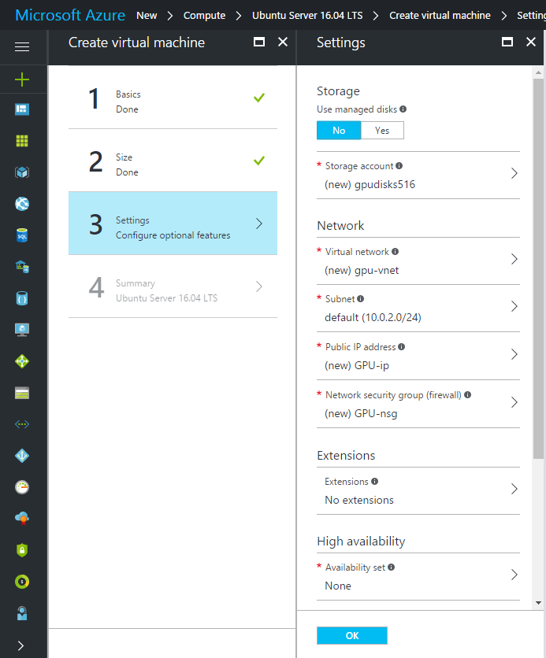
Default settings are fine for now, but we do need to modify the firewall later on.
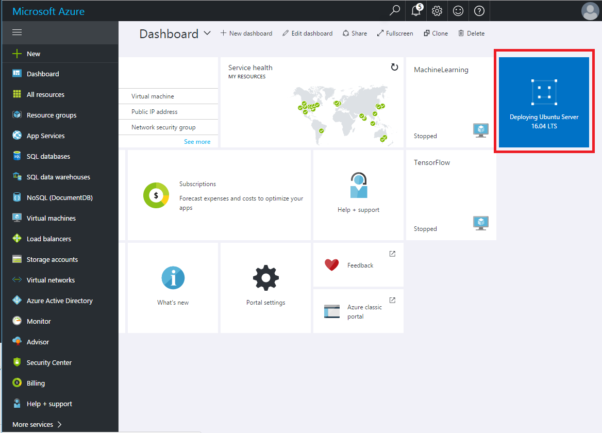
In order to be able to execute code on the server I tend to use Jupyter (formaly known as iPython Notebooks). This gives you a web interface to execute Python code and is probably going to be a lot easier than trying to write code via the terminal.
In order to connect to the notebook we will need to open up port 8888 for inbound connections.
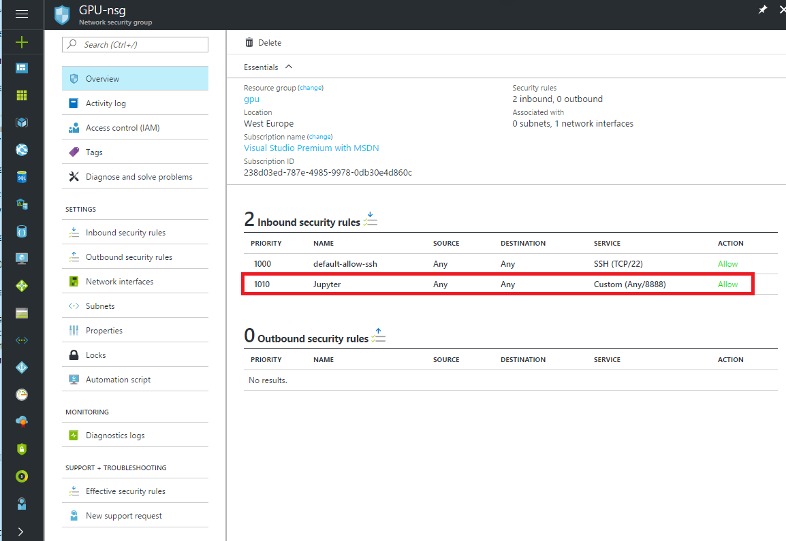
Now that we have an Azure server up and running we need to install the software on it. Log onto your server via SSH then update the OS, install either screen or TMUX (to allow you to close the SSH session without logging off) and some other needed utilities.
sudo apt-get update && apt-get -y upgrade
sudo apt-get install -y tmux build-essential gcc g++ make binutils
sudo apt-get install -y software-properties-common
In order to run code on the Nvidia GPU rather than the CPU we need to install CUDA. You might want to change this to the latest version. At the time of writing it was 8.0.61-1.
wget https://developer.nvidia.com/compute/cuda/8.0/Prod2/local_installers/cuda-repo-ubuntu1604-8-0-local-ga2_8.0.61-1_amd64-deb
sudo dpkg -i cuda-repo-ubuntu1604-8-0-local-ga2_8.0.61-1_amd64-deb
sudo apt-get update
sudo apt-get -y install cuda
echo "export PATH=/usr/local/cuda-8.0/bin${PATH:+:${PATH}}" >> .bashrc
export PATH=/usr/local/cuda-8.0/bin${PATH:+:${PATH}}
sudo modprobe nvidia
nvidia-smi
When you run the Nvidia-smi command you should see something like this:
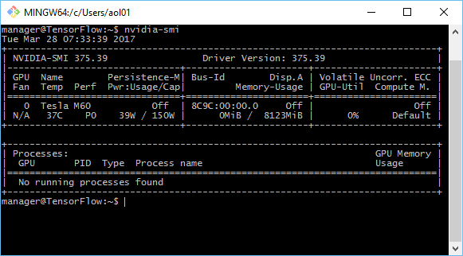
If you get an error then you should follow the official CUDA installation instructions. Make sure that your path variables are set up correctly. You might also need to restart the machine.
Anaconda is a platform that comes with a number of different data-science tools out of the box. It’s much easier to install Anaconda rathern than trying to install all of the packages yourself.
Make sure to replace user with your actual username.
sudo apt-get install -y python3
sudo apt-get install -y python3-pip
wget https://repo.continuum.io/archive/Anaconda3-4.2.0-Linux-x86_64.sh
bash Anaconda3-4.2.0-Linux-x86_64.sh -b
echo 'export PATH="/home/user/anaconda3/bin:$PATH"' >> ~/.bashrc
export PATH="/home/user/anaconda3/bin:$PATH"
conda install -y bcolz
conda upgrade -y --all
Bcolz is a package that makes it easy to store our machine learning models in an efficient way. It’s optional, but I would recommend it.
It’s worth noting that this specifically will install the GPU version of Tensorflow as opposed to the CPU version. If you try to use this on an Azure server without a GPU it won’t work!
sudo apt-get install -y libcupti-dev
pip3 install tensorflow-gpu
Tensorflow is great, but Keras provides a much nicer API for most tasks. Here we are installing it, then configuring Tensorflow as the backend.
pip3 install keras
mkdir ~/.keras
echo '{
"image_dim_ordering": "th",
"epsilon": 1e-07,
"floatx": "float32",
"backend": "tensorflow"
}' > ~/.keras/keras.json
As this is running on a public server, you really need to put a password on your Jupyter installation. The code below will require you to type the desired password in from the command line.
jupyter notebook --generate-config
jupass=`python3 -c "from notebook.auth import passwd; print(passwd())"`
echo "c.NotebookApp.password = u'"$jupass"'" >> .jupyter/jupyter_notebook_config.py
echo "c.NotebookApp.ip = '*'
c.NotebookApp.open_browser = False" >> .jupyter/jupyter_notebook_config.py
CUDNN is a library that significantly speeds up deep neural nets on a Nvidia GPU. It’s worth installing, but unfortunately requires account registration. Register then download the files using the link above. Note that I’m using CUDNN version 5.1 here.
tar -zxf cudnnDownloadName.tgz
cd cuda
sudo cp lib64/* /usr/lib/
sudo cp include/* /usr/include/
If you are not familiar with Jupyter I suggest you spend twenty minutes going through the documentation. Here is how to start it up.
mkdir machinelearning
cd machinelearning
jupyter notebook
You should then be able to connect to your server on port 8888 in a web browser. Log in using the password that you set.
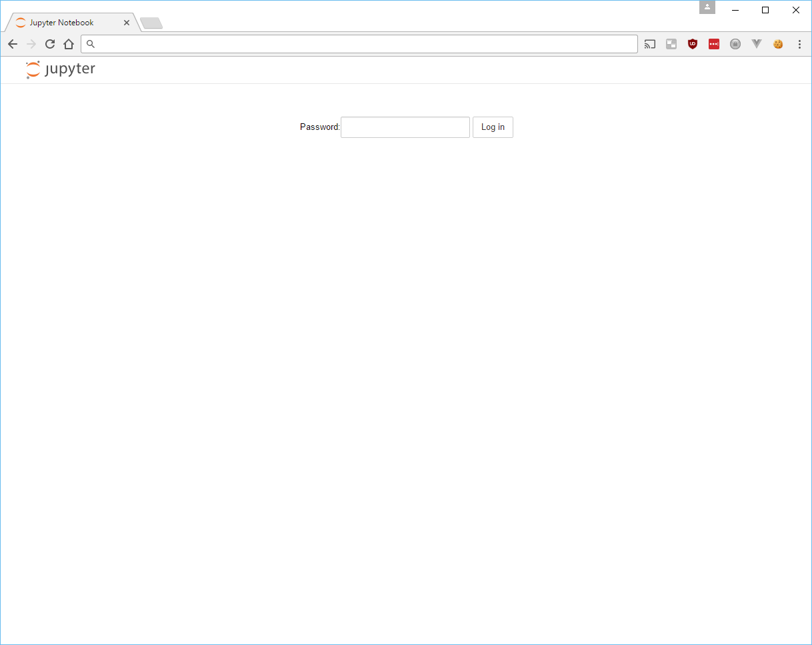
Create a new notebook, making sure to select “Pyton [conda root]”.
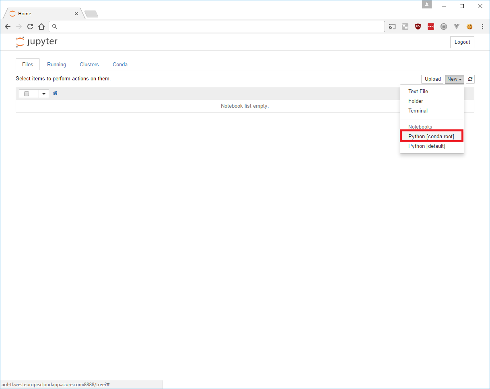
Paste in the following code. Don’t worry about what it does for now, you just need it to run. If it executes without the kernel crashing then you have installed everything successfully.
from __future__ import print_function
from keras.preprocessing import sequence
from keras.models import Sequential
from keras.layers import Dense, Dropout, Activation
from keras.layers import Embedding
from keras.layers import Conv1D, GlobalMaxPooling1D
from keras.datasets import imdb
# set parameters:
print('Loading data...')
(x_train, y_train), (x_test, y_test) = imdb.load_data(num_words=max_features)
print(len(x_train), 'train sequences')
print(len(x_test), 'test sequences')
print('Pad sequences (samples x time)')
x_train = sequence.pad_sequences(x_train, maxlen=400)
x_test = sequence.pad_sequences(x_test, maxlen=400)
print('x_train shape:', x_train.shape)
print('x_test shape:', x_test.shape)
print('Build model...')
model = Sequential()
model.add(Embedding(5000, 50, input_length=400))
model.add(Dropout(0.2))
model.add(Conv1D(250, 3, padding='valid', activation='relu', strides=1))
model.add(GlobalMaxPooling1D())
model.add(Dense(hidden_dims))
model.add(Dropout(0.2))
model.add(Activation('relu'))
model.add(Dense(1))
model.add(Activation('sigmoid'))
model.compile(loss='binary_crossentropy', optimizer='adam', metrics=['accuracy'])
model.fit(x_train, y_train, batch_size=batch_size, epochs=2, validation_data=(x_test, y_test), verbose=2)
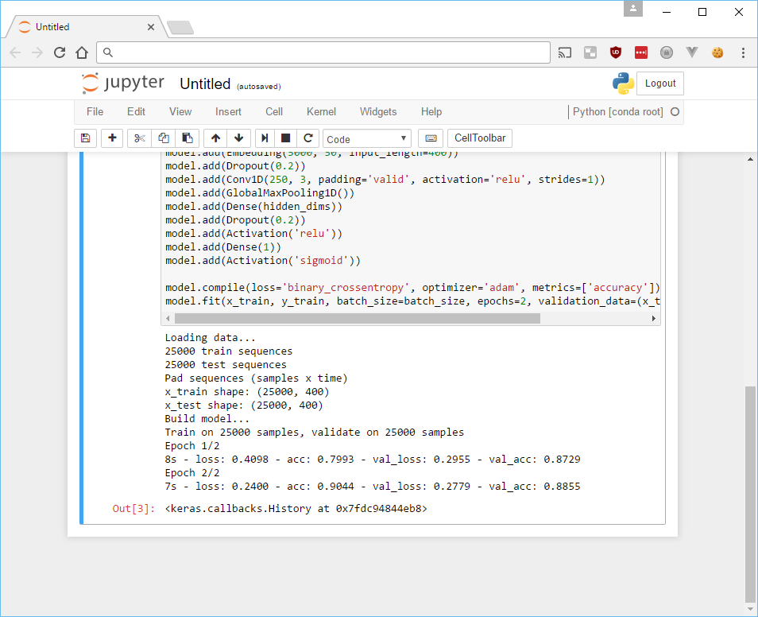
If you followed all of the steps above you should have a working ML setup. Here is a script to install everything except for CUDNN, which you will need to download manually.
#!/bin/bash
### Basic system stuff
sudo apt-get update && apt-get -y upgrade
sudo apt-get install -y tmux build-essential gcc g++ make binutils
sudo apt-get install -y software-properties-common
### Install CUDA
wget https://developer.nvidia.com/compute/cuda/8.0/Prod2/local_installers/cuda-repo-ubuntu1604-8-0-local-ga2_8.0.61-1_amd64-deb
sudo dpkg -i cuda-repo-ubuntu1604-8-0-local-ga2_8.0.61-1_amd64-deb
sudo apt-get update
sudo apt-get -y install cuda
echo "export PATH=/usr/local/cuda-8.0/bin${PATH:+:${PATH}}" > .bashrc
export PATH=/usr/local/cuda-8.0/bin${PATH:+:${PATH}}
sudo modprobe nvidia
nvidia-smi
## Install python3
sudo apt-get install -y python3
sudo apt-get install -y python3-pip
wget https://repo.continuum.io/archive/Anaconda3-4.2.0-Linux-x86_64.sh
bash Anaconda3-4.2.0-Linux-x86_64.sh -b
echo 'export PATH="/home/manager/anaconda3/bin:$PATH"' >> ~/.bashrc
export PATH="/home/manager/anaconda3/bin:$PATH"
conda install -y bcolz
conda upgrade -y --all
# Install Tensorflow
sudo apt-get install -y libcupti-dev
pip3 install tensorflow-gpu
# Install Keras
pip3 install keras
mkdir ~/.keras
echo '{
"image_dim_ordering": "th",
"epsilon": 1e-07,
"floatx": "float32",
"backend": "tensorflow"
}' > ~/.keras/keras.json
# Configure CUDNN
# Uncomment this if you have registered and downloaded the files from the Nvidia website
#tar -zxf cudnnDownloadName.tgz
#cd cuda
#sudo cp lib64/* /usr/lib/
#sudo cp include/* /usr/include/
#cd ~
# Configure Jupyter notebook (iPython)
jupyter notebook --generate-config
jupass=`python3 -c "from notebook.auth import passwd; print(passwd())"`
echo "c.NotebookApp.password = u'"$jupass"'" >> .jupyter/jupyter_notebook_config.py
echo "c.NotebookApp.ip = '*'
c.NotebookApp.open_browser = False" >> .jupyter/jupyter_notebook_config.py
As a word of caution, make sure that you remember to deallocate your server when it is not in use. It’s not enough to just shut it down, you will still be charged. From the Azure portal you can set up a schedule to automatically shut down a machine at a given time. I have mine configured to deallocate themselves at 12:00pm. As long as you are not planning on running something overnight this will save you money should you forget to deallocate your server!